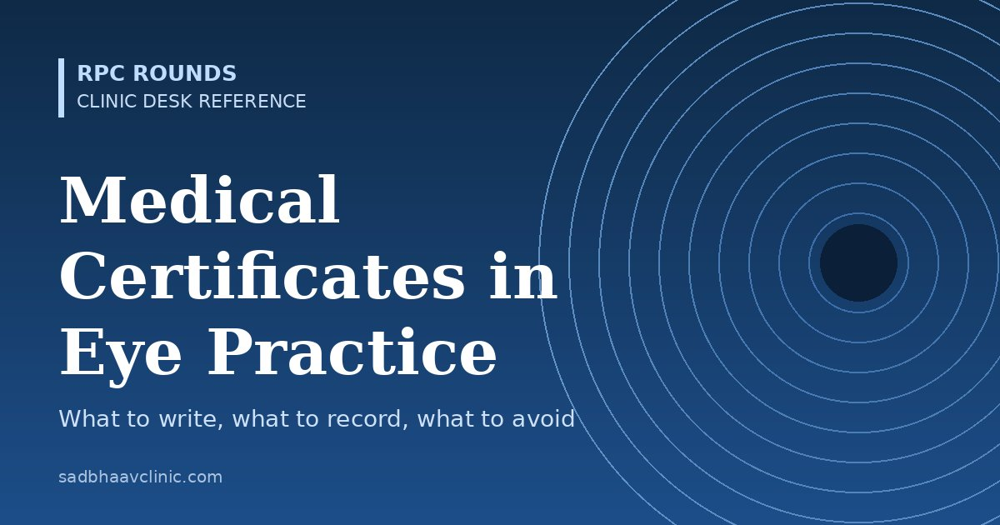

For: Practising ophthalmologists
Last updated: November 2026
Key points in 60 seconds
Choose the certificate, fill in what you found, and print it on your own letterhead or on plain paper. The wording follows the standard medical certificate format of the medical ethics regulations: examined on a stated date, patient's signature or thumb impression, identification mark, and the doctor's registration number. Leave days are counted for you, post-surgery fitness dates are suggested from the procedure (change them to suit the patient), and an office copy can be printed for your register.
Choose the certificate, fill in what you found on examination, and print it on your letterhead or plain paper. Everything stays on your device. Patient details are never saved; clinic and doctor details can be remembered in this browser (shared with the claim file generator).
| Certificate | What to include | Common pitfalls |
|---|---|---|
| Sick leave (medical certificate) | Diagnosis, eye, dates of rest advised, whether the patient can do light work or screen work | Backdating; vague diagnosis such as "eye problem"; long leave for minor conditions |
| Fitness to resume work or school | Diagnosis, that the condition has resolved or is non-infectious, restrictions (no swimming, no dusty work) | Certifying fitness for conjunctivitis while still infectious |
| Fitness after eye surgery | Operation and date, current vision, restrictions and their duration (lifting, driving, dusty work) | Not recording the vision on the day |
| Driving licence (Form 1A) | Vision, field, colour vision; conditions such as glasses | See the driving certificate checklist |
| Visual disability | As per the government format and guidelines | See the disability certificate pages |
| Job or recruitment medical (railways, defence, police) | Exactly the tests in the notice; unaided and corrected vision each eye; colour vision method | Using the wrong standard; not stating the colour vision test used |
| School or exam (extra time, large print, scribe) | Diagnosis, best corrected vision for distance and near, the support needed | Recommending support not linked to the measured vision |
| Spectacle or contact lens prescription for an employer | Full prescription, PD, date and validity | Leaving out near addition or prism |
When an injury may involve the police or court (assault, road accident, workplace, firecrackers), register it as a medico-legal case as per your hospital policy and inform the police where required.
What to record
Grievous hurt: the Bharatiya Nyaya Sanhita, 2023 (which replaced the Indian Penal Code from July 2024) lists permanent privation of the sight of either eye among the forms of grievous hurt, as the IPC did. Do not label an injury grievous on the first day if the final vision is not yet known; write "opinion reserved until final visual outcome" and give it later.
Sick leave: "This is to certify that Mr/Ms ____, aged __, ID no. ____, was examined by me on __/__/____ and is suffering from acute conjunctivitis of the right eye. He/she is advised rest from work from __/__/____ to __/__/____ (both days inclusive)."
Fitness: "... was examined by me on __/__/____. The infection has resolved and he/she is fit to resume duties/school from __/__/____."
After surgery: "... underwent cataract surgery with IOL implantation in the left eye on __/__/____. Corrected visual acuity on __/__/____ was 6/9. He/she may resume office work from __/__/____ and should avoid dusty work and heavy lifting until __/__/____."
These are common ranges, not rules. Base the period on what you see, the patient's work, and whether the condition is infectious; certify short periods with review rather than long periods in advance.
| Condition | Typical period off work or school | Points to note |
|---|---|---|
| Bacterial conjunctivitis | 2 to 5 days | Usually non-infectious after 24 to 48 hours of antibiotic drops and when the discharge has settled |
| Adenoviral (viral) keratoconjunctivitis | 7 to 14 days | Infectious for up to about 2 weeks from onset; re-examine before certifying fitness |
| Corneal ulcer (keratitis) | 1 to 3 weeks | Depends on size, organism and response; certify in short periods with review |
| Acute anterior uveitis | 5 to 10 days | Light sensitivity and blurred vision; screen work may be possible earlier |
| Cataract surgery | 3 to 7 days for desk work; 2 to 4 weeks for heavy or dusty work | Driving once vision meets the licensing standard |
| Vitrectomy with gas | 2 to 4 weeks | Head positioning; no flying or high altitude until the gas has absorbed (about 2 weeks for SF6, 6 to 8 weeks for C3F8) |
| LASIK or SMILE; PRK | 1 to 3 days; 5 to 7 days | Avoid swimming and dusty work for about 2 weeks |
| Intravitreal injection | Usually the day of injection only | Report pain or falling vision at once |
The medical ethics regulations ask every registered practitioner to keep a register of the medical certificates issued, with full details, to record the patient's identification marks, and to keep a copy of each certificate. A simple register (paper or in your EMR) has these columns:
| Serial no. | Date of issue | Patient (name, age, UHID) | Type of certificate | Diagnosis and eye | Period or fitness date | Identification mark and ID seen | Issued by |
|---|---|---|---|---|---|---|---|
| MC/2026/001 | 17/11/2026 | A. B. Sample, 34, E000001 | Sick leave | Acute conjunctivitis, both eyes | 17/11 to 21/11 (5 days) | Mole on left cheek; Aadhaar ending 0000 | Dr A. Example |
Keep the register and copies with your other records; see medical records.
Never sign a blank or pre-signed certificate, backdate one, certify a patient you did not examine, certify yourself or a family member, give leave longer than the illness needs, or state that someone meets a job or driving standard you have not been given and tested. Visual disability certificates are issued by the authorised medical board through the UDID system, not by an individual clinic.
📘 Want more exam-ready material? See Most Commons in Ophthalmology on Kindle, or browse all my books.
How to cite this page
Patel D. Medical Certificates in Eye Practice in India: Sick Leave, Fitness, Medico-Legal Injury Reports and Other Forms. RPC Rounds (Sadbhaav Eye Clinic). Updated November 2026. Available at: https://www.sadbhaavclinic.com/medical-certificates-eye-practice.html. Accessed [date].
Looking for an eye specialist in Ahmedabad? Eye Department at Sadbhaav or book a consultation with Dr. Dhaval Patel.